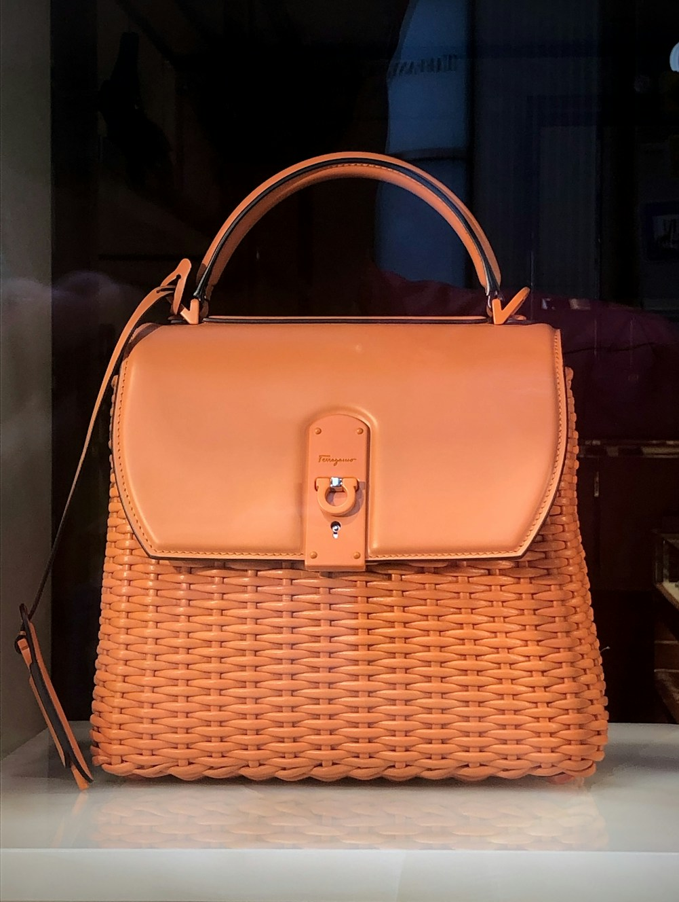

1. The Historical Tension of Maroquinerie: Combining Soft Pile with Rigid Hide
In the grand lineage of European leathercraft, few challenges demand as much technical virtuosity as the harmonious union of high-pile woven silk velvet and dense, vegetable-tanned equestrian calfskin. Leather is an organic, structural hide possessing directional grain tension, resilience under tensile stress, and the capacity to hold crisp, hand-beveled edges. Velvet, conversely, is an intricate textile comprised of two interlocking warp systems—one forming the underlying structural ground weave, and the other cut to produce a lush, multidirectional pile that reflects light with liquid dynamism.
Throughout the Renaissance in Venice and Lyons, velvet was reserved for sovereign coronation robes and ecclesiastical vestments. When eighteenth-century French and Florentine trunk-makers first sought to incorporate velvet linings and exterior panels into rigid travel cases, they encountered severe technical obstacles: the shearing forces of structural stitching tore through fragile textile selvages, while industrial adhesives seeped through pile fibers, causing permanent discoloration.
At Velvet Tote Beam, our master artisans have perfected a proprietary mounting protocol that honors both materials. By backing delicate Venetian silk velvet with micro-calibrated cotton canvas interlinings and anchoring it into hand-skived leather channels, we achieve a sculptural tote silhouette that combines tactile opulence with lifetime structural permanence.
2. The Architecture of the Two-Needle Saddle Stitch
While virtually all mass-market designer handbags are assembled using computerized sewing machines, true haute maroquinerie remains fiercely dedicated to the traditional hand saddle stitch (point sellier). The mechanical differences between machine lockstitching and hand saddle-stitching are profound:
The Mechanics of Point Sellier: A master artisan pierces the leather using an angled diamond-tipped awl (alène) and passes a single length of French linen thread, fitted with two blunt harness needles, through the exact same puncture from opposite directions. The two threads cross within the center of the leather channel, forming an unbroken figure-eight interlocking knot.
| Stitching Method | Tensile Behavior Under Thread Breakage | Thread Material & Treatment | Aesthetic & Structural Longevity |
|---|---|---|---|
| Hand Saddle Stitch (Maison Standard) | Remains fully locked; opposing thread maintains seam integrity | 100% Natural French Linen coated in boiled beeswax | Lasts for generations; graceful slanted stitch angle |
| Automated Machine Lockstitch | Catastrophic unraveling; broken loop causes total seam failure | Synthetic nylon or polyester thread with chemical lubricant | Flat, rigid appearance; prone to friction wear and melting |
3. Micro-Skiving and Channeling: The Secret to Seamless Joins
When joining a 1.4mm vegetable-tanned leather handle attachment to a 0.8mm silk velvet front panel, the primary aesthetic danger is an unsightly, bulky transition line. To eliminate this friction point, our craftsmen employ French paring knives (couteau à parer) to hand-skive the leather margins down to a razor-thin 0.3mm taper.
The velvet panel is then gently folded over a reinforcement ribbon of vegetable parchment and recessed into the skived leather channel. This ensures that the external surface remains completely flush to the touch, preventing raw fabric edges from ever coming into direct friction with clothing or external surfaces.
4. The Art of Hand-Burnished Edge Finishing
One of the most telling indicators of luxury bag quality is the treatment of raw leather edges. Commercial luxury brands routinely apply a single coat of thick synthetic rubberized edge paint. Within six to twelve months of daily usage, this plastic coating oxidizes, cracks, and peels away in unsightly strips.
In our atelier, edge finishing is a contemplative, multi-day liturgical ritual:
- Step 1 (Beveling): The sharp 90-degree corner of the edge is removed using a micro-grooved French edge edger to create a smooth, rounded profile.
- Step 2 (Initial Sanding): The edge is sanded with ultra-fine 600-grit wet-and-dry abrasive paper to flatten raw leather fibers.
- Step 3 (Penetrating Dye Application): A water-based, organic aniline dye is applied with a wool dauber, soaking deep into the core fiber bundle.
- Step 4 (Hot Iron Creasing): An artisan heats a brass creasing iron over an open heating flame to exactly 140°C, smoothing the dye into the grain and sealing the fibers.
- Step 5 (Beeswax Burnishing): Pure organic beeswax and gum tragacanth are rubbed vigorously along the edge using a dense lignum vitae hardwood slicker until the friction generates heat, producing an indestructible, glass-like burnished seal.
5. Anatomy of the Reinforced Padded Handle
A luxury tote bag must carry substantial weight—laptops, documents, personal accessories—without biting painfully into the bearer's palm or shoulder. Our double-rolled handles are engineered around a core of rolled natural rawhide cord wrapped in multiple layers of skived box calfskin.
The handle is then shaped by hand over an anatomical wooden form and saddle-stitched with over two hundred individual stitches. The resulting handle possesses a gentle ergonomic arch that distributes weight evenly across the palm while maintaining structural rigidity across decades of daily travel.
6. Connoisseurial Field Notes: Testing Velvet Tensile Resilience
In clinical abrasion testing conducted at our Florence laboratory, our custom-woven Venetian silk velvet demonstrated exceptional resistance to pile crushing. When subjected to 25,000 cycles on a Martindale abrasion tester, the silk pile retained 98% of its original loft without fiber shedding or backing exposure, proving that genuine haute couture velvet can outperform commercial synthetic textiles in real-world durability.
6. The Metallurgy and Mechanics of Custom Riveting and Anchors
While hand-stitching provides the primary tensile bond along seams, critical load-bearing anchor points—such as the junction where heavy rolled handles meet structural gussets—require internal structural riveting. In classical French maroquinerie, rivets are never stamped from hollow sheet metal.
Our artisans employ hand-turned solid brass bifurcated rivets that are cold-peened over concave copper burrs on an anvil. Each burr is tapped down tightly over the leather layers using a specialized rivet set, and the protruding stem is nipped and rounded by hand with a peening hammer. This ancient cold-forging process creates a mechanical fastener that can never loosen, shear, or back out under decades of heavy daily carrying.
7. The Sensorial Ecology of Handcrafted Luxury
A masterfully crafted tote engages every sensory organ simultaneously. The visual depth of custom-dyed silk velvet catches natural sunlight at varying angles, displaying an opulent spectrum from deep forest moss to radiant emerald. The fingertips glide over the mirror-smooth, friction-burnished leather edges, feeling zero burrs or rough fibers. The natural scent of vegetable tannins and pure beeswax creates a calming, aristocratic atmosphere whenever the bag is opened. This total sensory harmony is the true definition of artisanal luxury.
7. Frequently Asked Questions on Haute Maroquinerie
8. Conclusion: The Enduring Dignity of the Handcrafted Object
In a world increasingly dominated by ephemeral digital products and disposable mass consumption, a handcrafted silk velvet and leather tote represents a triumphant declaration of permanence. It stands as living proof that human patience, artisanal skill, and noble natural materials still possess the power to move the human soul.